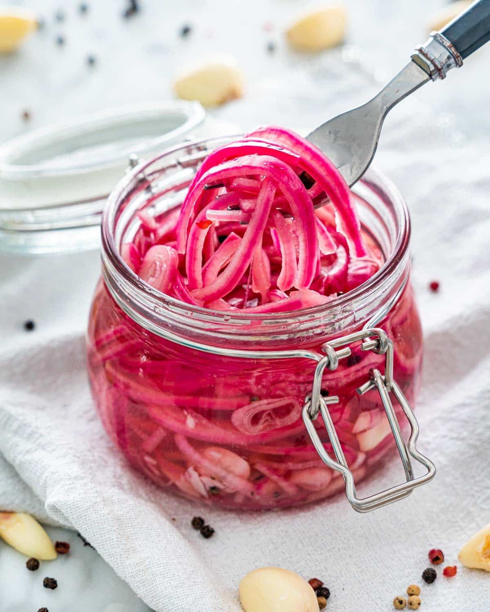

Pickled Onions

Pickled red onions in a mason jar.
Ingredients
- Red onion
- White distilled vinegar
- Water
- Kosher salt
Steps
- Slice onion into thin strips and place in mason jar
- Combine vinegar, water, and kosher salt in small pot
- Bring combined ingredients in pot to a boil using high heat on stovetop
- Immediately remove pot from heat and pour into mason jar containing onions
- Leave at room temperature until the mixture cools to room temperature (approx. 3 hours)